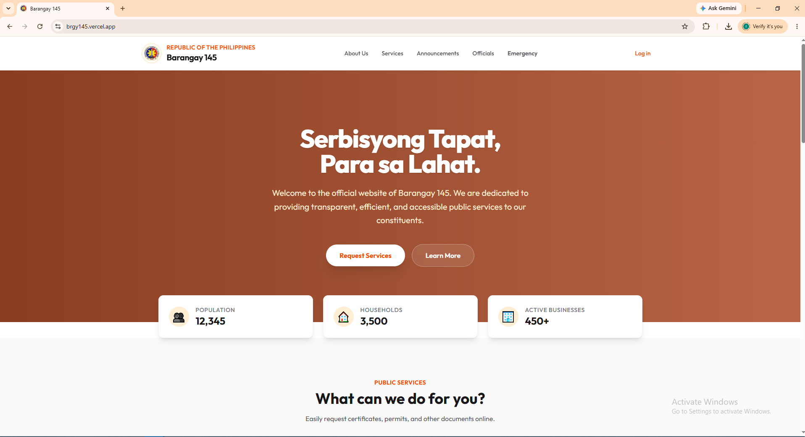
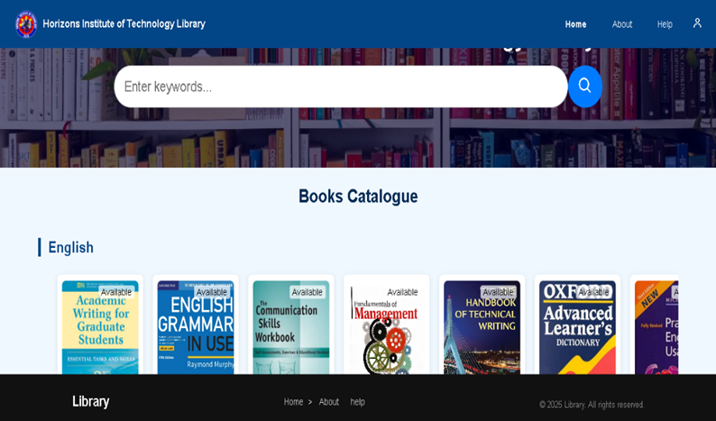
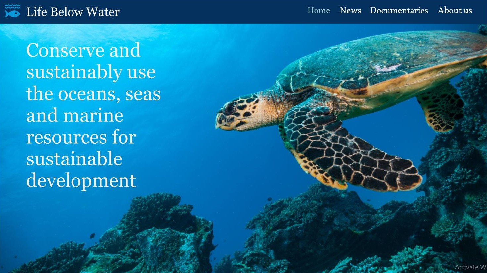

An Information Technology graduate with knowledge in computer troubleshooting, web development, graphic design, and multimedia production. Seeking an entry level opportunity where I can contribute my skills, continue learning, and grow as a technology and creative professional.
Download CVI am Rickmer Francisco, a graduate of Information Technology with a strong passion for technology, programming, computer hardware, design, and creative digital solutions. Throughout my academic journey, I developed skills in web development, programming, system design, computer hardware fundamentals, and multimedia creation. I enjoy combining technical knowledge and creativity to develop functional and user-friendly digital solutions.
I have gained experience in programming and web development using technologies such as HTML, CSS, and JavaScript, as well as working on academic and personal projects that strengthened my problem-solving and logical thinking skills. I also developed foundational knowledge in computer hardware, including computer components, assembly, troubleshooting, maintenance, and basic hardware configuration. Alongside my technical skills, I have experience with graphic design and multimedia tools such as Photoshop and Canva.
As a graduate, I am eager to apply my knowledge in a real-world IT environment where I can continue learning and developing my skills. I am adaptable, detail-oriented, responsible, and willing to learn new technologies. I value teamwork, problem-solving, and delivering quality results in every task I undertake.
My goal is to build a meaningful career in the IT and technology industry, particularly in areas involving programming, web development, computer hardware, and digital solutions. I am motivated to continue improving my technical skills, gain valuable professional experience, and contribute to innovative projects in a dynamic and evolving field.
I create responsive and user-friendly websites using HTML, CSS, and JavaScript.
Read MoreI design visually appealing graphics using Photoshop and Canva for branding and marketing.
Read MoreI create engaging digital content for social media, branding, and online platforms.
Read MoreI troubleshoot and resolve computer hardware and software issues, including OS installation, driver setup, system errors, performance problems.
Read MoreSkilled in Microsoft Word, Excel, and PowerPoint for documentation, data handling, and presentations.
Read MoreExperienced in using AI tools to enhance productivity, creativity, and workflow automation.
Read More
This training provided knowledge and practical experience in Python programming fundamentals, including variables, data types, operators, conditional statements, loops, functions, lists, and basic problem-solving and debugging.
Read More
Gained foundational knowledge of computer components, hardware installation, PC assembly, troubleshooting, hardware maintenance, and safe handling of computer equipment through Cisco Networking Academy training.
Read More

